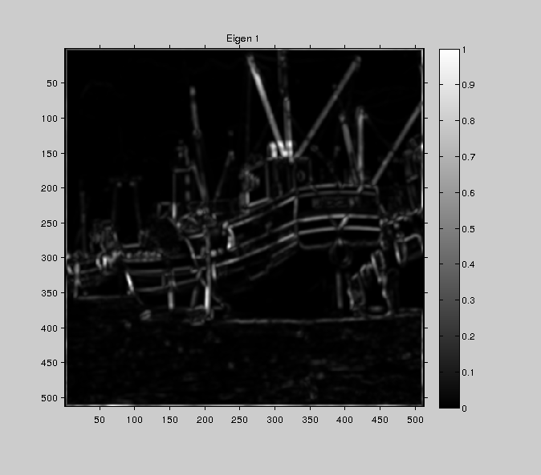

Contents
MyMainScript
tic;
Applying unsharpMask on boat.mat
img = load('../data/boat.mat');
im1=img.imageOrig;
im = im1/max(max(im1));
s=1;
G = fspecial('gaussian', [3 3] ,s);
im = imfilter(im, G, 'same');
disp(['Optimal value of sigma of smoothing gaussian =' num2str(s)]);
figure, imshow(mat2gray(im)),colorbar;title('Input image after applying gaussian filter');
[x y]=size(im);
[Ix,Iy] = myHarrisCornerDetector(im,2,0.034);
iptsetpref('ImshowAxesVisible','on');
figure('units','normalized','outerposition',[0 0 1 1])
subplot(1,3,1);
imshow(mat2gray(im1)), colorbar;
title('Input Image')
subplot(1,3,2);
imshow(mat2gray(Ix)), colorbar;
name = strcat(['../images/output' 'xDerivative']);
file_name = strcat([name '.png']);
imwrite(Ix,file_name);
title('X Derivative ');
subplot(1,3,3);
imshow(mat2gray(Iy)), colorbar;
name = strcat(['../images/output' 'yDerivative']);
file_name = strcat([name '.png']);
imwrite(Iy,file_name);
title('y Derivative');
toc;
Optimal value of sigma of smoothing gaussian =1
Optimal value of sigma of weight gaussian for x and y derivative =2
Optimal value of k (please note that k is normalized) =0.034
Elapsed time is 24.442115 seconds.
